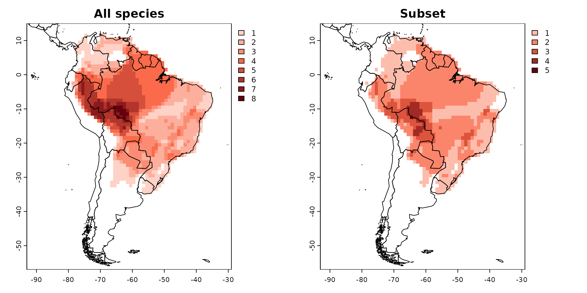

Cropping and subseting your presence absence matrix
Source:vignettes/cropping-and-subseting-your-presence-absence-matrix.Rmd
cropping-and-subseting-your-presence-absence-matrix.RmdIn this guide, we’ll dive into the technique of subsetting or
cropping a PresenceAbsence object.
To accomplish this task, we’ll use the lets.subsetPAM
function. Just let the function know which species you want to keep and
provide the PresenceAbsence object as input.
# Package
library(letsR)
# Data
data("PAM")
names <- PAM$Species_name[1:20] # keep only the first 20 names
PAM_subset <- lets.subsetPAM(PAM, names)
par(mfrow = c(1, 2))
plot(PAM, main = "All species")
plot(PAM_subset, main = "Subset")
You might also find it useful to crop your
PresenceAbsence object to a specific region using a
shapefile. The lets.pamcrop function offers a
straightforward method to achieve this. For instance, let’s crop our
Presence-Absence Matrix (PAM) to the borders of Brazil.
data(wrld_simpl) # World map
data(PAM)
Brazil <- wrld_simpl[wrld_simpl$NAME == "Brazil", ] # Brazil (polygon)
PAM_crop <- lets.pamcrop(PAM, Brazil, remove.sp = TRUE)
par(mfrow = c(1, 2))
plot(PAM, main = "South America")
plot(PAM_crop, xlab = "Longitude", ylab = "Latitude",
main = "Phyllomedusa species richness (Brazil crop)")
plot(sf::st_geometry(wrld_simpl), add = TRUE)
To cite letsR in publications use: Bruno Vilela and Fabricio Villalobos (2015). letsR: a new R package for data handling and analysis in macroecology. Methods in Ecology and Evolution. DOI: 10.1111/2041-210X.12401